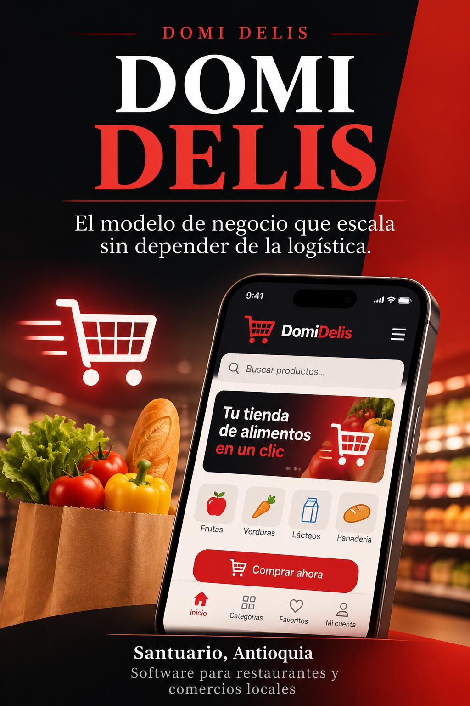

La reunión del 30 de octubre dejó claro el problema: no es solo la falta de domiciliarios. Es que el modelo actual no genera ingresos predecibles.
Con las tarifas de zona ($4.000–$14.000) y lo que se paga al domiciliario, el margen por pedido está entre −$250 y +$1.750. Para un salario mínimo (~$2.000.000) harían falta 38–89 pedidos diarios. Santuario no tiene ese volumen.
La Ley 2466 de 2025 hace que operar como plataforma de reparto sea costoso. Por eso la plataforma no debe intermediar el dinero de las entregas.
DOMI DELIS Negocios — Software mensual para restaurantes y comercios. Catálogo con personalizaciones, QR de mesa, panel de pedidos e historial de ventas. Las tiendas pagan porque les organiza la operación.
Marketplace — Canal de adquisición. La app de consumidores ayuda a que la gente descubra las tiendas. No es la principal fuente de dinero.
Delivery — Opcional. Solo cuando hay domiciliario disponible y el margen es positivo. El domiciliario cobra la tarifa completa directamente.
El delivery es un extra. No es el motivo principal por el que una tienda debería pagar.
Fase 0 · 0–6 meses — Demostrar
10–15 tiendas fundadoras sin (o con muy baja) mensualidad. Meta: ≥30 pedidos/mes gestionados por la app.
Fase 1 · 6–18 meses — Monetizar
Activar planes: Pionero (gratis), Básico (~$20.000), Pro (~$35.000). Solo con evidencia de uso real.
Fase 2 · 18+ meses — Replicar
Licenciar la plantilla a gestores locales en municipios cercanos a $150.000–250.000/mes por municipio.
Regla de salida: si en el mes 6 no se cumplen las dos primeras métricas, no se invierte más en logística.
Mes 3: 5–8 tiendas con QR funcionando y al menos 15–20 pedidos/mes totales.
Mes 6: ≥30 pedidos/mes y ≥10 tiendas activas. Decisión de activar planes de pago.
Mes 12: 20–30 tiendas en Santuario con ingresos recurrentes de $500.000–800.000/mes.
Mes 18+: Primeras licencias en municipios vecinos. Ingreso potencial de un salario mínimo con 8 municipios.
Todo lo anterior es una hipótesis de trabajo, no un hecho comprobado. Se valida o se descarta con las primeras 10–15 tiendas fundadoras.
Si en el mes 6 no hay uso real (≥30 pedidos/mes y ≥10 tiendas activas), la hipótesis se revisa antes de invertir más.
No se ataca a todos los tipos de tienda a la vez. El piloto empieza con comida rápida de mesa (restaurantes, comidas rápidas, asaderos) donde el QR tiene impacto inmediato.
Otros segmentos (panaderías, tiendas de abarrotes, etc.) se consideran después, si el primero funciona.
Una tienda se considera activada cuando cumple estos tres hitos:
Las métricas de pedidos/mes y tiendas activas se calculan solo sobre tiendas activadas, no sobre las que solo se registraron.
En las primeras fundadoras se medirá el costo de acompañar a cada una:
Eso permite calcular si el ingreso futuro (cuando se active el cobro) cubre el costo de adquirir y retener a la tienda. No se necesita un número exacto al inicio; se necesita el hábito de medirlo.
Estas preguntas buscan problemas universales (que se repiten en la mayoría de tiendas de comida), no particularidades de un solo negocio. El objetivo es construir software que sirva a muchas tiendas a la vez.
Pregunta opcional (específica): ¿Hay algo particular de tu negocio que te gustaría que una herramienta resolviera? (No es prioridad; sirve para detectar patrones extra.)